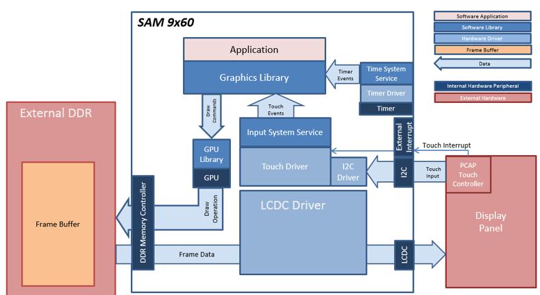
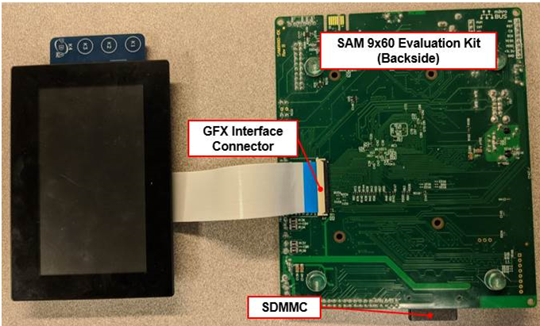
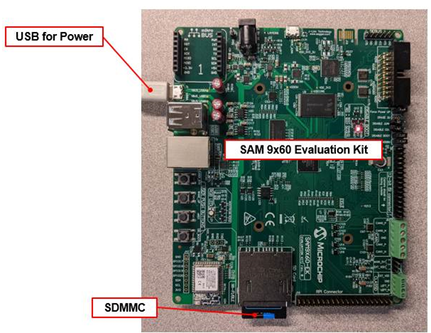

Demonstration Features
• Input system service and touch driver
• Time system service, timer-counter peripheral library and driver
• LCDC display controller and GFX2D GPU
• 32-bit RGBA color frame buffer in external DDR memory
• I2C peripheral library and driver
• JPEG image stored in internal flash

The Project Graph diagram shows the Harmony components that are included in this application. Lines between components are drawn to satisfy components that depend on a capability that another component provides.
Adding the “SAM 9x60 Evaluation Kit BSP” and “Aria Graphics w/ PDA TM4301b Display” Graphics Template component into the project graph will automatically add the components needed for a graphics project and resolve their dependencies. It will also configure the pins needed to drive the external peripherals like the display and the touch controller.
The parent directory for this application is gfx/apps/aria_quickstart. To build this application, using MPLBA X open the gfx/apps/aria_quickstart/firmware/aria_qs_9x60_ek_tm4301b.X project file.
The following table lists configuration properties:
|
Workspace |
BSP Used |
Graphics Template Used |
Description |
|
aria_qs_9x60_ek_tm4301b.X |
SAM 9X60 Evaluation Kit |
Aria Graphics w/ PDA TM4301b Display |
Aria GFX on SAM 9X60 Evaluation Kit and PDA TM4301b (4.3-inch) |
 Important! Important! |
This application may contain custom code that is marked by the comments // START OF CUSTOM CODE ... and // END OF CUSTOM CODE. When using the MPLAB Harmony Configurator to regenerate the application code, use the "ALL" merging strategy and do not remove or replace the custom code. |
Connect the ribbon cable from the display to the J16 connector on the back of the SAM 9x60 Evaluation Kit board.

Power up the board by connecting the power adapter to power connector or a powered USB cable to the USB port on the SAM 9x60 Evaluation Kit board. The final hardware setup should be:

Running the Demonstration
When power-on is successful, the demonstration will display a similar menu to that shown in the following figure (different configurations may have slight variation in the screen aspect ratio):

When Make changes. Generate. Run. is touched, the button will toggle with each individual touch.

|
MPLAB® Harmony Graphics Suite
|